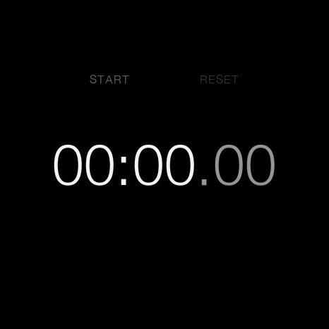

Stopwatch
Waveshare AMOLED 1.75C · Rust

- Large button · top left
- Start · pause · resume
- Small button · top right
- Lap while running · reset when paused
The latest lap appears below the total. Buttons only.
Waveshare AMOLED 1.75C · Rust

The latest lap appears below the total. Buttons only.